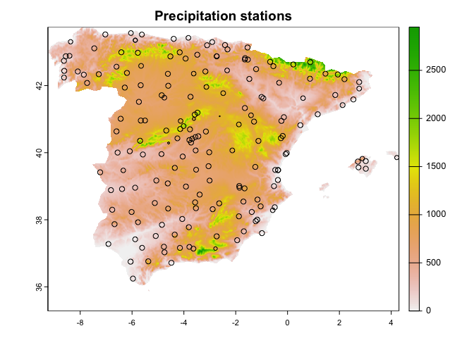
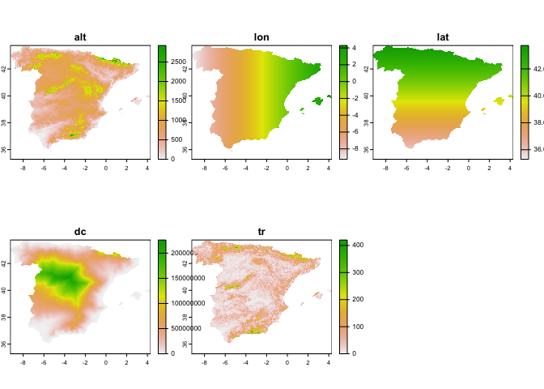
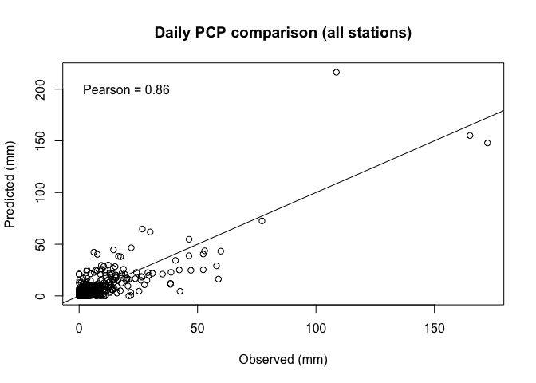
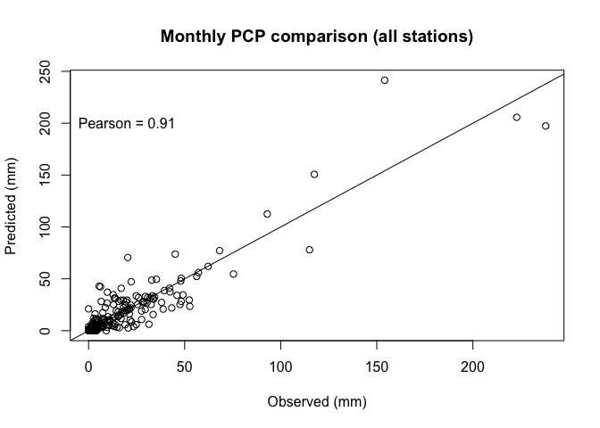
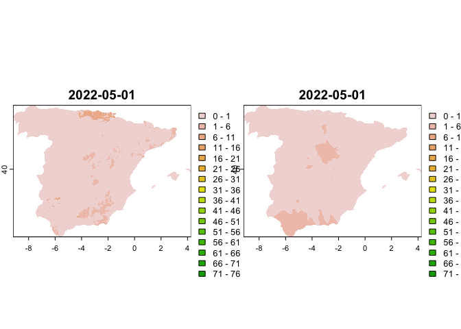
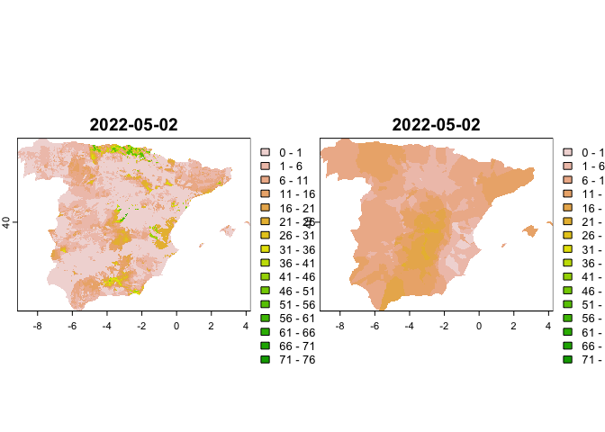

The goal of reddPrec is to perform a complete reconstruction of daily precipitation. The process follows 3 steps: 1) quality control of daily raw precipitation observations; 2) gap filling of missing values in data series; 3) creation of gridded datasets.
While here is provided a simple explanation about how to use the functions, a detailed explanation of the methodology can be found in: Serrano-Notivoli et al., (2017).
Each one of the three steps can be applied independently through the three available functions:
While the whole package is designed to work with daily precipitation, monthly and annual data can be addressed.
Installation is straightforward since the package is available on CRAN:
install.packages("reddPrec")We will use a set of daily precipitation observations from the Spanish Meterological Agency (AEMET) as example.
The package climaemet facilitates the process of downloading the data, but you will need an API key from AEMET that can be freely obtained here.
library(climaemet)
# just replace "MY_API_KEY" by your personal API key and run this:
# aemet_api_key("MY_API_KEY", install=TRUE)
data_daily <- aemet_daily_clim(station = "all",
start = "2022-05-01",
end = "2022-05-31",
return_sf = TRUE)We only want to analyze the Iberian Peninsula and Balearic Islands, so we crop the spatial domain of the data with package sf using the boundaries of the Spanish regions (except Canary Islands) retrieved with package giscoR.
library(sf)
library(giscoR)
spain <- gisco_get_nuts(country = "Spain", nuts_level = "2")
spain <- spain[-which(spain$NAME_LATN=='Canarias'),]
data_daily <- st_crop(data_daily, spain)## Warning: attribute variables are assumed to be spatially constant throughout
## all geometriesThe daily data must be organized in a single matrix with columns (stations) and rows (days). To do that, we use the reshape package which facilitates the task of casting data.
library(reshape)
dd <- cbind(as.data.frame(data_daily),st_coordinates(data_daily))
obs_pr <- cast(dd[,c('fecha','indicativo','prec')], fecha~indicativo)AEMET codes low precipitation data (PCP<0.1) as “Ip”. As the function only accepts numeric values, we ensure that no strings remain.
obs_pr <- apply(obs_pr, 2, function(x){
x <- gsub(',','.',x)
x[x=='Ip'] <- NA
as.numeric(x)
})Lastly, we create a data.frame with the information of the stations
stations <- data.frame(ID=dd$indicativo, alt = dd$altitud, lon = dd$X, lat = dd$Y)
stations <- stations[-which(duplicated(stations$ID)),]Te estimation of precipitation is used in all stages of the reconstruction process, and it uses environmental data as predictors. As we don’t have available this information for each station’s location, it can be extracted from raster data, but must create it first.
In this case, we will use five predictors: 1) elevation, 2) latitude, 3) longitude, 4) distance to the coast (as a cost-distance function with elevation) and 5) TRI (Terrain Ruggedness Index).
First, we use the elevatr package to derive a raster of elevations. Then, the terra package will allow for calculating the required environmental predictors derived from elevations.
library(elevatr)
library(terra)
dem <- get_elev_raster(data_daily, z = 5)
dem <- crop(dem, spain)
dem <- mask(dem, spain)
dem[dem<0] <- 0
dem <- rast(dem)
dc <- costDist(dem)
tr <- terrain(dem, v = 'TRI')Now we create the latitude and longitude rasters from the stations’ information.
lon <- rast(cbind(crds(dem),crds(dem)[,1]),type='xyz',crs='EPSG:4326')
lat <- rast(cbind(crds(dem),crds(dem)[,2]),type='xyz',crs='EPSG:4326')Lastly, we extract the values of distance to the coast and TRI to the stations
stations <- vect(stations, geom=c('lon','lat'),crs = 'EPSG:4326',keepgeom=TRUE)
stations$dc <- terra::extract(dc, stations)[,2]
stations$tr <- terra::extract(tr, stations)[,2]
stations <- as.data.frame(stations)Those stations with no overlapping with raster don’t have data, so we remove them
stations <- stations[complete.cases(stations),]
obs_pr <- obs_pr[, match(stations$ID, colnames(obs_pr))]At his point, we have available the dataset with the original data.
st <- vect(stations, geom=c('lon','lat'),crs = 'EPSG:4326',keepgeom=TRUE)
st$ndata <- colSums(!is.na(obs_pr))*100/nrow(obs_pr)
plot(dem, main = "Precipitation stations")
plot(st, cex=st$ndata/100, pch = 1, add=T)
And the environmental pedictors

The quality control (QC) function allows for a customization of the thresholds applied to each criteria. In this case, we will flag and remove the observations based on the following conditionals:
library(reddPrec)
qcdata <- qcPrec(prec = obs_pr,
sts = stations,
crs = 'EPSG:4326', coords = c('lon','lat'),
coords_as_preds = TRUE, neibs = 10, thres = NA,
qc = 'all', qc3 = 10, qc4 = c(0.99, 5), qc5 = c(0.01, 0.1, 5),
ncpu=2)Depending on the velocity of your processor(s), the job will be done quick or slow, but this particular task (with our setting) should take a few minutes. If you use a large dataset of observations, the computing time rises.
The result is a list of two elements:
In our particular example, the outliers (QC3) were the most flagged values (3.05%), followed by suspect values (QC1, 0.90%), suspect dry (QC5, 0.42%), suspect wet (QC4, 0.21%) and suspect zeros (QC2, 0.11%).
allcodes <- as.numeric(as.matrix(qcdata$codes))
flagged <- round(table(allcodes)*100/length(allcodes),2)
flagged## allcodes
## 1 2 3 4 5
## 0.90 0.11 3.05 0.21 0.42Missing values are common in raw original data series of observations. After the QC process, the number of these missing data is increased, and the resulting gaps can affect to further analyses at coarser scales (seasonal, annual, etc.). To solve that, a large collection of infilling methods exist, most of them based on regression algorithms.
The gap filling process in reddPrec uses the nearest observations (a number defined by the user) and their associated environmental information (which we added to the stations data.frame in the “data preparation” section) to compute a Reference Value (RV). The RV is computed through a multivariate linear regression that uses all those data.
The function returns a data.frame with different estimates for all days of every station:
gf_res <- gapFilling(prec = qcdata$cleaned,
sts = stations,
dates = seq.Date(as.Date('2022-05-01'), as.Date('2022-05-31'),
by ='day'),
stmethod = 'ratio',
ncpu = 2,
thres = NA,
neibs = 10,
coords = c('lon','lat'),
crs = 'EPSG:4326',
coords_as_preds = TRUE,
window = 31)## [2024-01-17 07:55:29.476654] - Filling gaps## [2024-01-17 07:55:43.014059] - Standardizing final data series## [2024-01-17 07:55:43.324543] - ENDOur example doesn’t show any difference between mod_pred and st_pred since we used a window of 31 days, which was the complete length of the dataset.
We can compare, for example, the original data series and their reconstructions.
# daily
plot(gf_res$obs, gf_res$st_pred, xlab = 'Observed (mm)', ylab = 'Predicted (mm)', main = 'Daily PCP comparison (all stations)')
abline(0,1)
text(20,200, paste0('Pearson = ', round(cor(gf_res$obs, gf_res$st_pred, use="pairwise.complete.obs"),2)))
# monthly average (only considering days with observation)
obs <- gf_res[complete.cases(gf_res),]
o <- aggregate(obs$obs, by = list(obs$ID), FUN = sum)
p <- aggregate(obs$st_pred, by = list(obs$ID), FUN = sum)
plot(o[,2], p[,2], xlab = 'Observed (mm)', ylab = 'Predicted (mm)', main = 'Monthly PCP comparison (all stations)')
abline(0,1)
text(20,200, paste0('Pearson = ', round(cor(o[,2], p[,2], use="pairwise.complete.obs"),2)))
The final step creates a gridded product based on the environmental variables in raster format. Different inputs can be used as observations: (i) the original observations or (ii) the reconstructed series. Reconstructed series are recommended due to the neighboring stations for all pixels will remain the same in all days of the period. Otherwise, some inconsistencies (inhomogeneities) could be imputed to the grid and spatially propagated.
We will use reconstructed series for our example, 15 neighbors with no radius limitation. Please consider that, although here the three steps (QC, gap filling and gridding) are presented as a workflow, they can be run separately, meaning that the options used in gridding can be different than gap fillin, for example.
The gridding process will take a long time depending on multiple factors: the grid resolution, the number of days, the number of neighbors, and the number of used CPUs, mainly. In our example, we will aggregate the grid at a coarser resolution and will reduce the time period to two days just to reduce the computing time. (This example takes about 3 minutes each day)
rec <- data.frame(date = gf_res$date, ID = gf_res$ID, pred = gf_res$st_pred)
rec <- cast(rec, date~ID)## Using pred as value column. Use the value argument to cast to override this choice
rec <- rec[,-1]
env2 <- terra::aggregate(env, 2)
rec2 <- rec[1:2,]
gridPcp(prec = rec2,
grid = env2,
sts = stations,
dates = seq.Date(as.Date('2022-05-01'), as.Date('2022-05-02'),by ='day'),
ncpu = 4,
thres = NA,
neibs = 15,
coords = c('lon','lat'),
crs = 'EPSG:4326',
coords_as_preds = TRUE)## [2024-01-17 07:55:43.461083] - Computing day 2022-05-01## [2024-01-17 07:57:03.973424] - Computing day 2022-05-02## [2024-01-17 07:58:23.712944] - ENDThe function creates 2 folders in the working directory, one containing the daily grids of precipitation estimates and one containing the daily grids of uncertainties (errors of the model)
pre <- rast(list.files('./pred/', full.names = T))
err <- rast(list.files('./err/', full.names = T))
plot(c(pre[[1]],err[[1]]), breaks = c(0,seq(1,80,5)))
